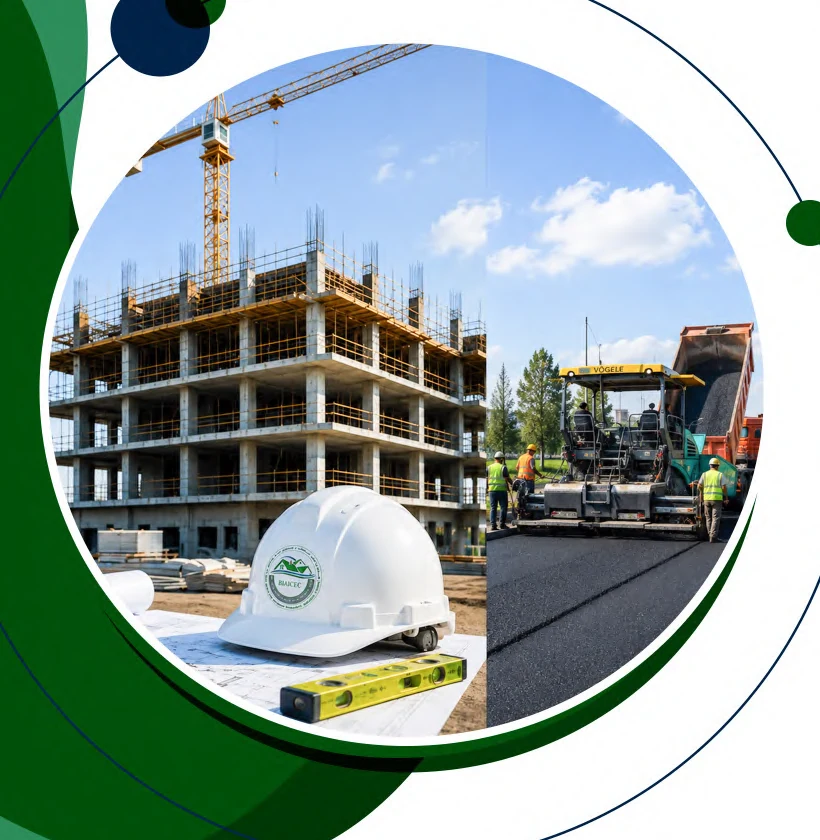
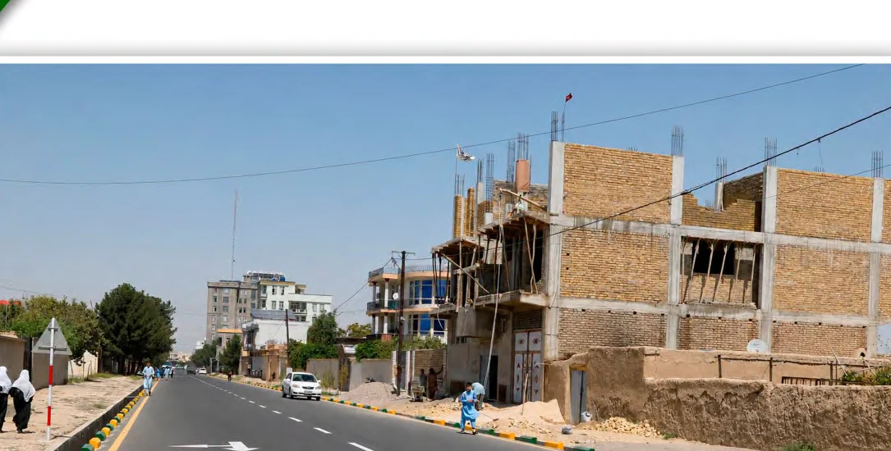

01
ماموریت
اجرای پروژههای ساختمانی و زیربنایی با مدیریت منظم، نیروی فنی و استفاده موثر از ماشینآلات و منابع.
شناخت بهتر از تاریخچه، ماهیت، دیدگاه و ظرفیت اجرایی بلخ استانبول آسیا.


شرکت بینالمللی ساختمانی و انجنیری بلخ استانبول آسیا در سال ۲۰۰۸ تأسیس شده و بر اساس پروفایل رسمی خود، به عنوان یک شرکت خصوصی، غیردولتی و غیرسیاسی در عرصه ساختمانی و انجنیری فعالیت میکند.
تجربه شرکت شامل سرکسازی، پروژههای ساختمانی، پل و آبرو، تأسیسات زیربنایی و کارهای شهری است و برای اجرای پروژهها از نیروی انسانی، مدیریت ساحه و ماشینآلات اختصاصی استفاده میکند.
اجرای پروژههای ساختمانی و زیربنایی با مدیریت منظم، نیروی فنی و استفاده موثر از ماشینآلات و منابع.
کمک به بهبود زیربناها و کیفیت زندگی مردم از طریق کارهای ساختمانی پایدار و قابل اعتماد.
ایجاد ارزش برای کارفرما و جامعه با تحویل پروژههایی که از نظر زمان، کیفیت و کارایی قابل دفاع باشند.
آغاز فعالیت شرکت در بخش ساختمانی و انجنیری.
ورود به پروژههای سرک، ساختمان، آبرو و پروژههای شهری در مزارشریف و سایر ساحات.
ایجاد ظرفیت ماشینآلات سنگین شامل لودر، رولر، گریدر، میکسر، تانکر، تراکتور و وسایل حملونقل.
پروفایل شرکت ۳۱ پروژه و بیش از ۵۵۳ میلیون افغانی ارزش مجموع کارهای ساختمانی ثبتشده را فهرست میکند.